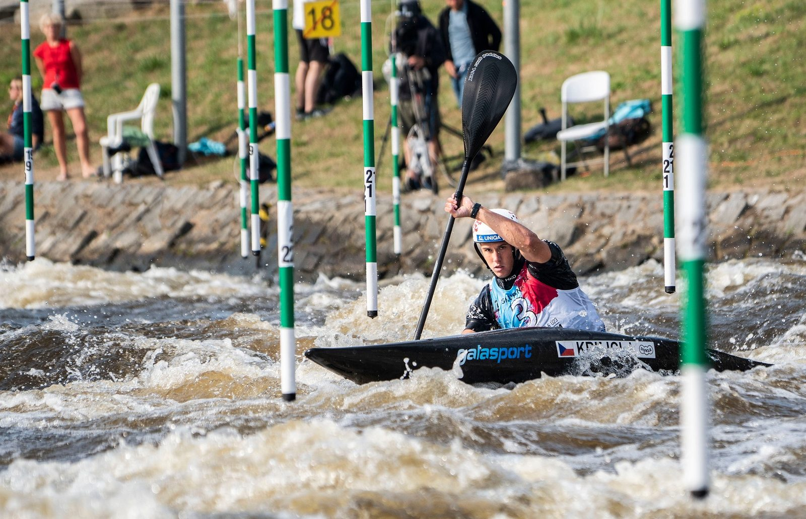
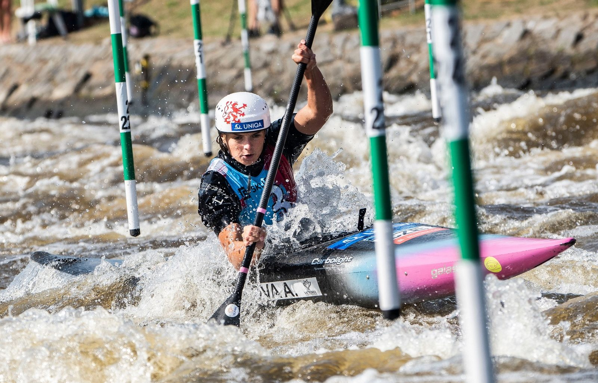
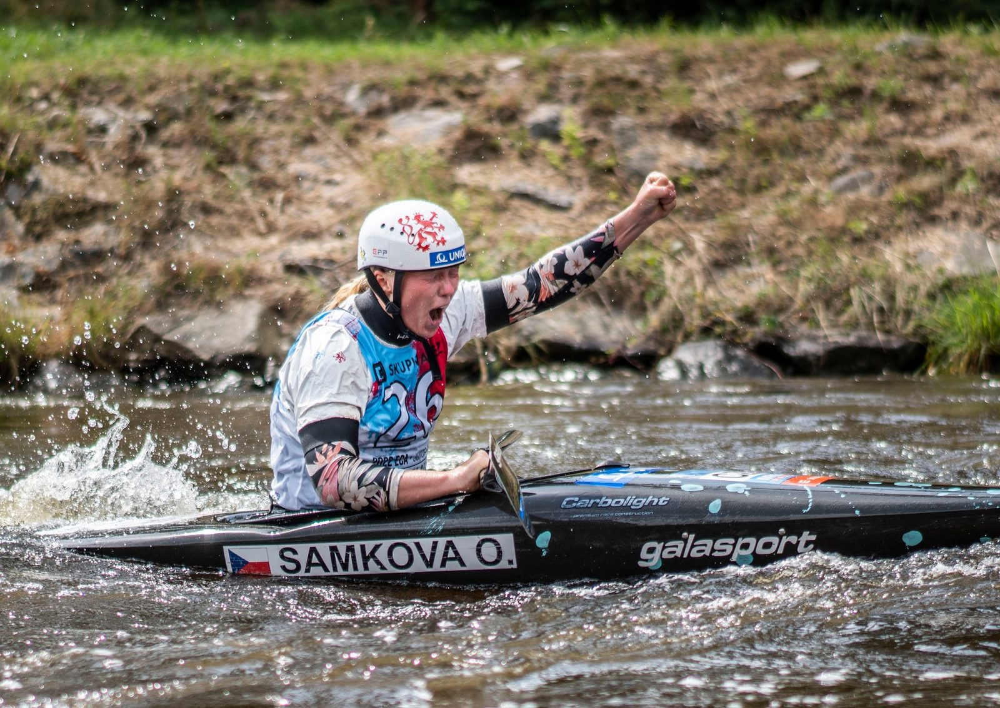

Český tým vodních slalomářů rozšiřuje sbírku medailí z evropského šampionátu juniorů a závodníků do 23 let. Před domácím publikem ve Vodáckém areálu Lídy Polesné si pro první evropský titul v kariéře dojela kajakářka Antonie Galušková, loňský triumf obhájil českobudějovický rodák Jakub Krejčí. Stříbrnou medaili vybojovala juniorka Olga Samková, nejlepším z juniorských kajakářů byl osmý Štěpán Venc.
Tři jízdy, tři vítězství. Domácí borec Jakub Krejčí od kvalifikace nedal soupeřům šanci a po vítězném semifinále dokázal ustát i tlak posledního startujícího v patnáctičlenném finále. „Pocity jsou neuvěřitelné. Závodil jsem doma a obhajoval titul, což je vlastně ta nejhorší kombinace,“ smál se v cíli mistr Evropy. „Byl jsem opravdu nervózní a těší mě, jak jsem to ustál. Dnes jsem dokázal předvést dvě hezké jízdy a jsem neskutečně šťastný,“ doplnil rodák z Českých Budějovic, který si tak spravil chuť po desátém místě z letošního mistrovství světa do 23 let v Ivree. „Já ty neúspěchy beru jako skvělou zkušenost pro to se zlepšovat a motivovat se do dalšího tréninku. A z toho, co se dnes povedlo, jsem úplně nadšený.“


Premiérový titul na evropském šampionátu do 23 let vybojovala kajakářka Antonie Galušková, která do semifinále postoupila z devátého místa a ve finále tak startovala jako druhá. „Když jsem na startu slyšela, že Kuba vybojoval titul, tak jsem si řekla, že to musím taky zkusit,“ smála se dvojnásobná juniorská mistryně světa. „Zní to neuvěřitelně, už jen z důvodu, že jde o můj první evropský titul, a navíc doma. Těžko se hledají slova. Opravdu si toho moc vážím.“


Ve finále do 23 let se představila také vítězka kvalifikace a semifinále Lucie Nesnídalová. Poslední jízda jí však nevyšla podle představ, a nakonec elitní desítku uzavřela. „Mám trošku smíšené pocity. Dařilo se mi v kvalifikaci i semifinále, ale ve finále to nevycházelo hned od první brány, jízda se pak vezla s chybami a nabalovalo se to. Na druhou stranu jsem ráda, že se mi povedly ty předchozí dvě jízdy, protože letošní sezonu se mi zas tak nedařilo a teď jsem to dokázala trochu předvést. Teď už je jen potřeba to doladit i ve finále,“ zhodnotila Nesnídalová.
V kategorii do 23 let zůstali za branami finále čtrnáctá Gabriela Satková, dvacátý Jan Bárta a dvaadvacátý Tomáš Zima.
Juniorskou medaili pro český tým přidala kajakářka Olga Samková, která předvedla čistou jízdu a z domácího šampionátu si odváží stříbro. „Dnešek jsem si moc užila. Přiznám se, že nejvíc nervózní jsem byla před semifinále, ale na startu finále ze mě všechno spadlo a jelo se mi moc dobře, vše vycházelo tak, jak jsem chtěla. Se svou jízdou jsem velice spokojená. Domácí atmosféru jsem hodně vnímala, všichni mě hnali až do cíle a mají na tom úspěchu velkou zásluhu,“ uvedla Samková s úsměvem a stříbrnou medailí na krku. Vítězka semifinále Klára Kneblová zaznamenala dvě dvousekundové penalizace, které ji odsunuly na čtvrtou příčku.


Juniorští kajakáři skončili bez medaile, nejlepší českou jízdu předvedl úřadující vicemistr světa Štěpán Venc. „Jízda nebyla ideální, byly tam dva šťouchy, ale na druhou stranu to nebylo nic špatného, za co bych se styděl. Jsem spokojený, letošní mezinárodní sezona z mého pohledu vyšla dobře, ani se mi o tom nezdálo,“ zhodnotil osmý nejrychlejší kajakář. „V Itálii na mistrovství světa jsem mohl jen překvapit, tady byla pozice těžší. Byl jsem nervózní, ale snažil jsem se to ustát a myslím, že jsem to nakonec zvládnul.“
Adam Semerád skončil ve finále devátý, Matyáš Novák bral jedenácté místo. Postup do finále unikl domácí závodnici Kateřině Švehlové, která v semifinále inkasovala trestnou padesátku a skončila čtrnáctá.
Zítřejší program nabídne semifinále a finále kanoistek a kanoistů v obou věkových kategoriích, odpoledne se pojede o medaile v extrémním slalomu.